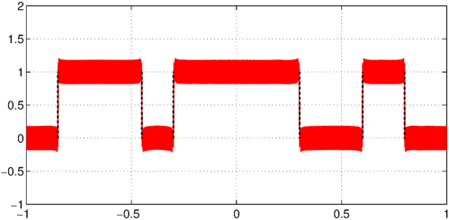
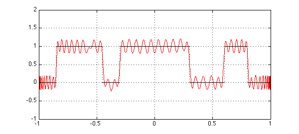
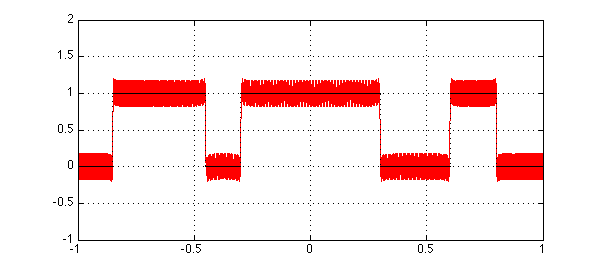
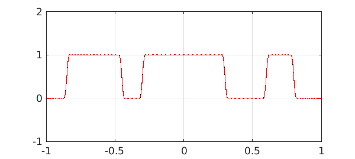
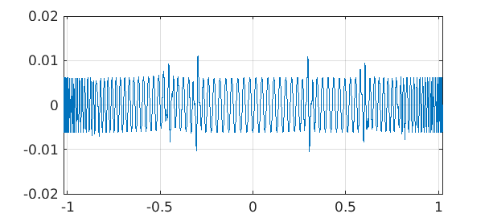
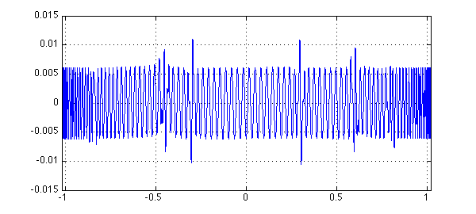

Digital filtering is one of the most important applications of approximation theory, used in telephones and radios and music players and innumerable other devices in our wired world.
Mathematically, digital filters are polynomial ("FIR" or "finite impulse response") or rational ("IIR" or "infinite impulse response") approximations to prescribed functions. The classic method for computing FIR filters, called the Parks_McLellan method by engineers, is the Remez algorithm, available in the remez command of Chebfun [1]. However, complicated filter designs are not always easy by this method, for the Remez algorithm is nonlinear and may fail to converge if there is not a good enough initial guess.
It seems that CF (Caratheodory-Fejer) approximation may be a promising alternative, either for computing the filter itself or at least for generating an initial guess. (For a reference on CF approximations, see Chapter 20 of [2].) Consider for example this function with "pass bands":
x = chebfun('x');
LW = 'linewidth';
f = (abs(x)<.3) + (abs(x-.7)<.1) + (abs(x+.65)<.2);
plot(f,'k',LW,1.2), grid on, axis([-1 1 -1 2]), shg

Here are polynomial approximations of degrees $100$ and $1000$:
tic for m = [100 1000] p = cf(f,m,0,max(100,2*m)); plot(p,'r',f,'k',LW,1.2), grid on axis([-1 1 -1 2]), snapnow end


It didn't take long to produce these pictures:
toc
Elapsed time is 4.120624 seconds.
In practice, filter specifications usually have "don't care" regions between pass and stop bands. Here to give an idea of the possibilities we make f a little smoother by convolving it with a narrow hat function. Now degrees $100$ and $200$ give good filters:
s = chebfun('s', [-.02 .02]);
phi = 50-50^2*abs(s);
f2 = conv(f,phi);
for m = [100 200]
p = cf(f2,m,0,max(100,2*m));
plot(p,'r',f2,'k',LW,1.2), grid on
axis([-1 1 -1 2]), snapnow
end


Here's the error:
plot(f2-p,LW,1.2), grid on

For applications, one would need to transplant such computations from a bounded to a periodic interval.
References
[1] T. W. Parks and J. H. McClellan, Chebyshev approximation for nonrecursive digital filters with linear phase, IEEE Transactions on Circuit Theory, CT-19 (1972), 189-194.
[2] L. N. Trefethen, Approximation Theory and Approximation Practice, SIAM, 2013.